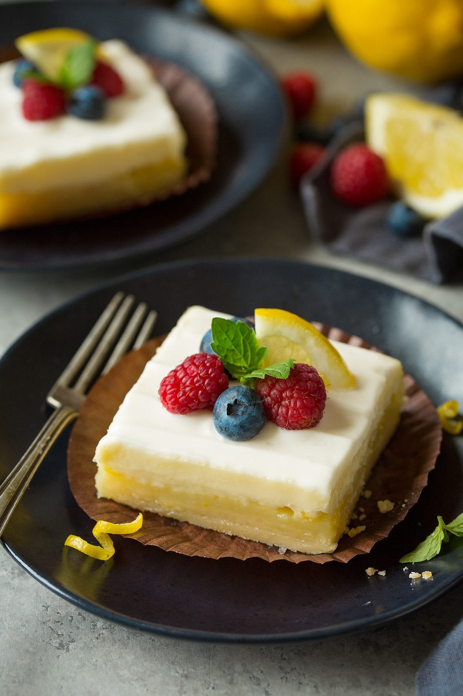

Homemade recipes
Lemon Cheesecake Bars Recipe
Ingredients
- 1/2 cup graham cracker crumbs
- 1/3 cup butter, melted
- 1/2 teaspoon ground ginger
- 3 packages cream cheese, softened
- 1 cup sugar
- 1/4 cup milk
- 2 Tablespoons flour
- 1 1/2 teaspoon. pure lemon extract.
- 1 teaspoon pure vanilla extract.
- 3 eggs
Steps
- Preheat oven to 350 degrees. Mix graham cracker crumbs, butter and ginger. Press firmly onto bottom of foil-lined 13x9 inch baking pan. Refrigerate until ready to use.
- Beat cream cheese and sugar in large bowl with electric mixer on medium speed until well blended. Add milk,flour, and extracts; mix well. Add eggs, one at a time, beating on low speed after each addition just until blended. Pour over crust.
- Bake 40 to 45 minutes or until center is almost set. Cool completely on wire rack.
- Refigerate 4 hours or overnight.Cut into bars and serve.
